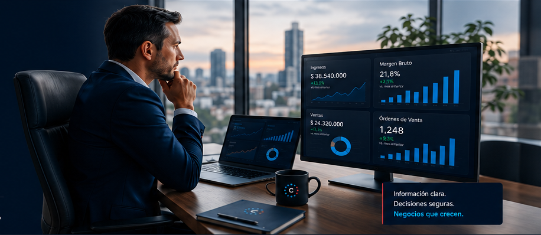

Entender mejor mi negocio
Convertimos datos dispersos en información clara para controlar resultados y decidir con confianza.
TRANSFORMACIÓN EMPRESARIAL BASADA EN DATOS
Hacemos que tu negocio funcione mejor, dependa menos de vos y te dé la información que necesitás para tomar mejores decisiones.

CONVERTIMOS DATOS EN DECISIONES
No necesitás saber si necesitás software, automatización, inteligencia artificial o simplemente reorganizar un proceso. Contanos qué problema tenés. Nosotros estudiamos tu negocio y encontramos la solución adecuada.
SOLUCIONES
La tecnología queda detrás. El resultado va adelante.
Convertimos datos dispersos en información clara para controlar resultados y decidir con confianza.
Simplificamos y automatizamos tareas repetitivas, conciliaciones, reportes y procesos administrativos.
Integramos información, herramientas y procesos para evitar duplicaciones y trabajo innecesario.
Mejoramos seguimiento comercial, canales digitales, atención y organización de clientes.
Diseñamos un plan integral y progresivo para una organización más eficiente, conectada y preparada para crecer.
EL OBJETIVO
Imaginá comenzar el día sabiendo cómo están ventas, costos, cobranzas, inventarios y resultados, sin tener que perseguir información.
Tu empresa no debería necesitarte para cada tarea.
Debería necesitarte para las decisiones que realmente importan.
Detectá lo importante. Decidí. Seguí con tu día.
CÓMO TRABAJAMOS
Primera reunión gratuita para entender tu situación.
Procesos, datos, herramientas, sistemas y oportunidades.
Solución, alcance, etapas, tiempos e inversión.
Desarrollamos e integramos lo acordado.
Preparamos al equipo para aprovechar la solución.
Comparamos el antes y el después para evaluar impacto.
SOLUCIONES EN ACCIÓN
Proyectos desarrollados y demostrativos que muestran el tipo de problemas que podemos resolver.
Cruce de movimientos y facturas para detectar diferencias con menos trabajo manual.
Resultado buscado: más control y menos tiempo operativo.Información organizada para seguimiento, análisis y toma de decisiones financieras.
Resultado buscado: visión clara y seguimiento ágil.Análisis con SQL y tableros gerenciales que convierten datos en hallazgos accionables.
Resultado buscado: decidir con información.Búsqueda, análisis, resumen y distribución automatizada de información relevante.
Resultado buscado: información útil sin revisión manual constante.Procesos administrativos repetitivos resueltos de forma más rápida y consistente.
Resultado buscado: eficiencia y reducción de errores.Diagnóstico, priorización e implementación progresiva de mejoras conectadas entre sí.
Resultado buscado: una empresa que funcione mejor.SECTORES
Por eso cada solución también lo es.
EQUIPO MULTIDISCIPLINARIO
Integramos conocimientos de negocios, administración, finanzas, datos, desarrollo tecnológico y, cuando el proyecto lo requiere, asesoramiento jurídico empresarial y especialistas específicos.
BIBLIOTECA EMPRESAS INTELIGENTES
Guías prácticas para empresarios, profesionales y organizaciones que quieren mejorar su forma de trabajar.
Primer capítulo de una colección de nueve contenidos de autoría propia.
Próximamente disponible →Recurso de apoyo para facilitar la comprensión de conceptos y herramientas durante las capacitaciones.
Consultar →Los distintos temas podrán adquirirse por separado directamente desde la web.
Conocer más →EMPEZAR TIENE QUE SER FÁCIL
HABLEMOS DE TU NEGOCIO
Contanos qué te preocupa, qué te quita tiempo o qué sentís que podría funcionar mejor. No necesitás llegar con la solución. Solo con el problema.
Solicitá tu primera reunión gratuita por WhatsApp →